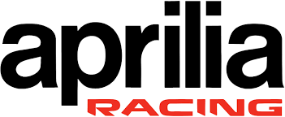

Aprilia Racing
Who is the Owner of this team ?
Aprilia Racing is the official factory team of Aprilia, a motorcycle manufacturer under the Piaggio Group.
Origin of the team
While Aprilia first entered MotoGP in the 1990s and later partnered with Gresini (2015–2021), the team achieved full factory status as Aprilia Racing in 2022.
Achievemet of the team
Since becoming a full factory outfit, Aprilia Racing has not yet claimed a premier-class Riders’ or Constructors’ Championship. However, they have become increasingly competitive, finishing third in the Constructors’ standings for several seasons.
Formed in which year
As the official factory team under the name Aprilia Racing, it was formed in 2022.
Years with major wins
Though it has not yet secured premier-class titles, Aprilia earned its first MotoGP race win with Aleix Espargaró in 2022 and reached several podiums since—showing consistent performance.
The famous riders of team